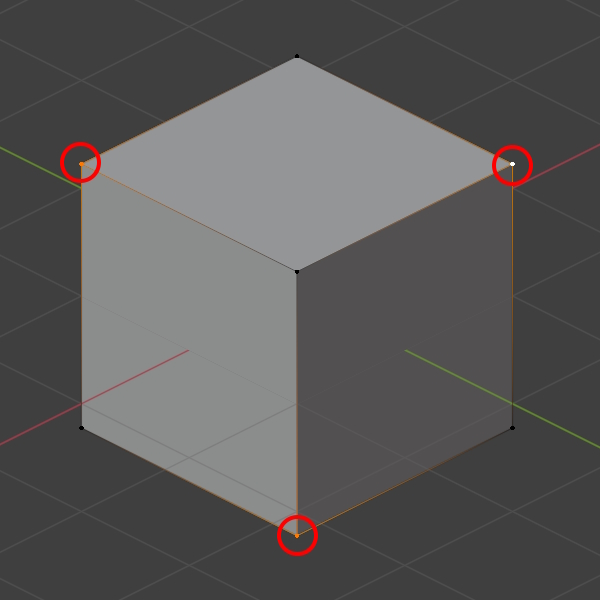
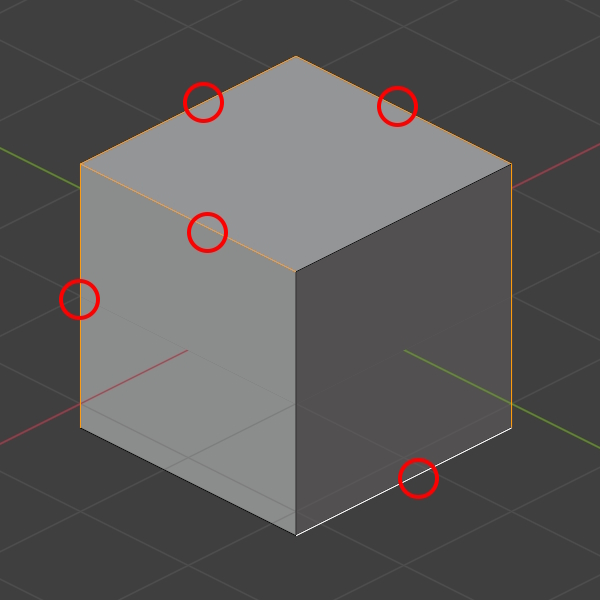
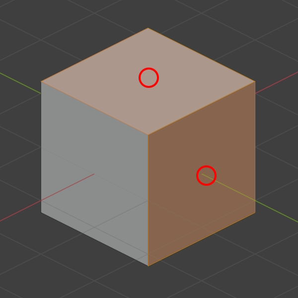
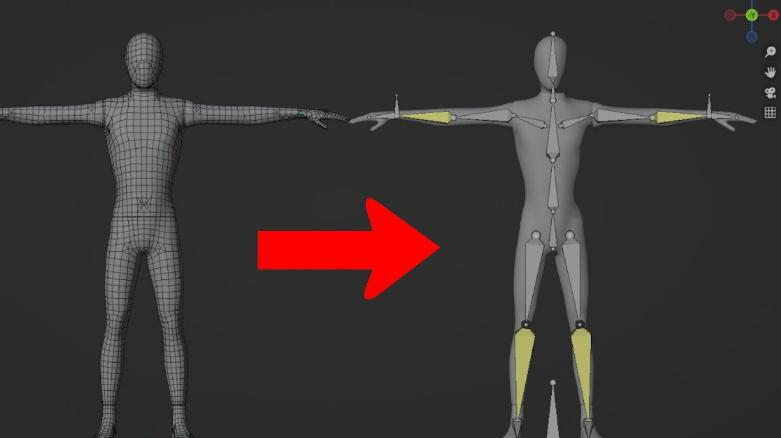

ü¶¥Tema 2: Mallas y Esqueletos 3D
Ya sabemos qué es el diseño poligonal, pero… ¿en qué consiste exactamente? ¿Por dónde se empieza? ¿Qué hace falta para crear un personaje? Pues bien, un modelo 3D consiste en cientos de miles de polígonos relacionados entre sí, formados por tres elementos básicos:
Elementos clave de una malla:
- üü¢ V√©rtices: Son puntos en el
espacio tridimensional. Representan la unidad
más pequeña del modelado 3D. Cuantos más
vértices tenga una malla, mayor será su nivel de
detalle.

- üü° Aristas: Son las l√≠neas que
conectan dos vértices. Ayudan a definir la
estructura del modelo, especialmente en modelos
de tipo low poly o de geometría clara

- üî∫ Caras: Se forman cuando tres
o más vértices se conectan para crear una
superficie. Lo más común es usar triángulos o
cuadriláteros, ya que los motores gráficos
procesan mejor estas formas.

Partes Fundamentales de un Modelo 3D
La Malla (Mesh)
Es la representación visual del modelo. Puede suavizarse o subdividirse según el estilo del proyecto. Pero no puede moverse por sí sola.
ü¶¥ El Esqueleto (Rig)
Es el sistema de huesos internos que le da movilidad a la malla. Se organiza en jerarquías padre-hijo para permitir animaciones fluidas como caminar o correr.

El hueso principal (root) transmite
movimiento a los
demás. Esto permite controlar brazos, piernas o
expresiones faciales fácilmente.

üé® Pintado de Pesos (Weight Painting)
Permite definir qué partes de la malla son afectadas por cada hueso del esqueleto.
Se representa con colores:
- üî¥ Rojo: Máxima influencia
- üîµ Azul: M√≠nima influencia
Una correcta distribución de pesos evita errores visuales como estiramientos o torsiones poco naturales.